data handling
Zeyu(Zey)
2026-04-30
1 R Markdown
This is an R Markdown document. Markdown is a simple formatting syntax for authoring HTML, PDF, and MS Word documents. For more details on using R Markdown see http://rmarkdown.rstudio.com.
When you click the Knit button a document will be generated that includes both content as well as the output of any embedded R code chunks within the document. You can embed an R code chunk like this:
summary(cars)## speed dist
## Min. : 4.0 Min. : 2.00
## 1st Qu.:12.0 1st Qu.: 26.00
## Median :15.0 Median : 36.00
## Mean :15.4 Mean : 42.98
## 3rd Qu.:19.0 3rd Qu.: 56.00
## Max. :25.0 Max. :120.002 Including Plots
You can also embed plots, for example:

Note that the echo = FALSE parameter was added to the
code chunk to prevent printing of the R code that generated the
plot.
3 Preparation
library(network)##
## 'network' 1.20.0 (2026-02-06), part of the Statnet Project
## * 'news(package="network")' for changes since last version
## * 'citation("network")' for citation information
## * 'https://statnet.org' for help, support, and other informationlibrary(igraph)##
## Attaching package: 'igraph'## The following objects are masked from 'package:network':
##
## %c%, %s%, add.edges, add.vertices, delete.edges, delete.vertices, get.edge.attribute,
## get.edges, get.vertex.attribute, is.bipartite, is.directed, list.edge.attributes,
## list.vertex.attributes, set.edge.attribute, set.vertex.attribute## The following objects are masked from 'package:stats':
##
## decompose, spectrum## The following object is masked from 'package:base':
##
## unionlibrary(reshape2)
library(tidyverse)## ── Attaching core tidyverse packages ──────────────────────────── tidyverse 2.0.0 ──
## ✔ dplyr 1.2.0 ✔ readr 2.1.6
## ✔ forcats 1.0.1 ✔ stringr 1.6.0
## ✔ ggplot2 4.0.2 ✔ tibble 3.3.1
## ✔ lubridate 1.9.5 ✔ tidyr 1.3.2
## ✔ purrr 1.2.1## ── Conflicts ────────────────────────────────────────────── tidyverse_conflicts() ──
## ✖ lubridate::%--%() masks igraph::%--%()
## ✖ dplyr::as_data_frame() masks tibble::as_data_frame(), igraph::as_data_frame()
## ✖ purrr::compose() masks igraph::compose()
## ✖ tidyr::crossing() masks igraph::crossing()
## ✖ dplyr::filter() masks stats::filter()
## ✖ dplyr::lag() masks stats::lag()
## ✖ purrr::simplify() masks igraph::simplify()
## ℹ Use the conflicted package (<http://conflicted.r-lib.org/>) to force all conflicts to become errorsHow to deal with the conflict?
4 1.1 Getting network data into R: the igraph package
4.1 1.1.1 From adjacency matrix to igraph object
#Read data
url1 <- "https://github.com/rensec/sasr08/raw/main/g_adj_matrix_simple.csv"
g_matrix <- read.csv(file = url1, header = FALSE)
g_matrix## V1 V2 V3 V4 V5
## 1 0 1 0 1 0
## 2 0 0 1 0 0
## 3 1 0 0 0 0
## 4 0 0 0 0 0
## 5 0 0 0 0 0#Check whether this is a matrix or data frame
class(g_matrix)## [1] "data.frame"#Turn this into a matrix object
g_matrix <- as.matrix(g_matrix)
g_matrix## V1 V2 V3 V4 V5
## [1,] 0 1 0 1 0
## [2,] 0 0 1 0 0
## [3,] 1 0 0 0 0
## [4,] 0 0 0 0 0
## [5,] 0 0 0 0 0#Add row- and column names
rownames(g_matrix) <- 1:nrow(g_matrix)
colnames(g_matrix) <- 1:ncol(g_matrix)
g_matrix## 1 2 3 4 5
## 1 0 1 0 1 0
## 2 0 0 1 0 0
## 3 1 0 0 0 0
## 4 0 0 0 0 0
## 5 0 0 0 0 0QUESTION: How many nodes are included in this matrix, #and how many edges are there between these nodes?
5 nodes, 4 edges
#reading attributes of the nodes
g_nodes_age <- read.csv(file = "https://github.com/rensec/sasr08/raw/main/g_nodes_age.csv")
g_nodes_age## id age
## 1 1 20
## 2 2 21
## 3 3 25
## 4 4 NA
## 5 5 21#transfer into an igraph shape
g <- graph_from_adjacency_matrix(g_matrix)
class(g)## [1] "igraph"g## IGRAPH 35d9911 DN-- 5 4 --
## + attr: name (v/c)
## + edges from 35d9911 (vertex names):
## [1] 1->2 1->4 2->3 3->1plot(g)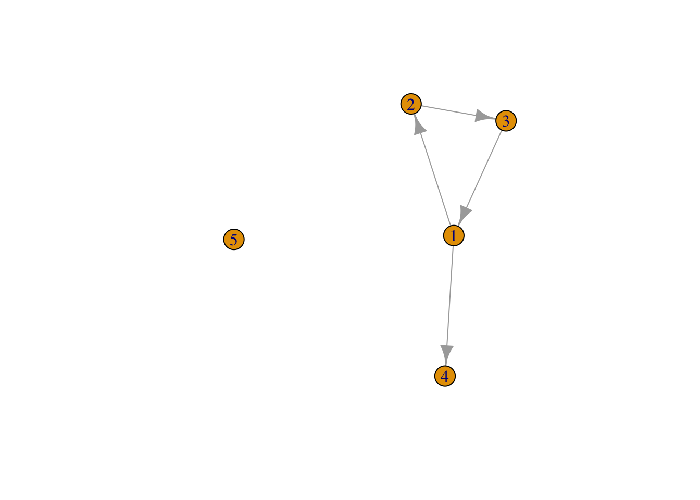
#isolated node missing
g <- set_vertex_attr(g,
name = "age",
value = g_nodes_age$age)4.2 1.1.2 From edge list to igraph object
#From edge list to igraph object
g_elist <- read.csv(file = "https://github.com/rensec/sasr08/raw/main/g_elist.csv")
g_elist## from to
## 1 1 2
## 2 2 3
## 3 3 1
## 4 1 4#create an igraph network object from the edge list
g_from_elist <- graph_from_data_frame(g_elist)
plot(g_from_elist)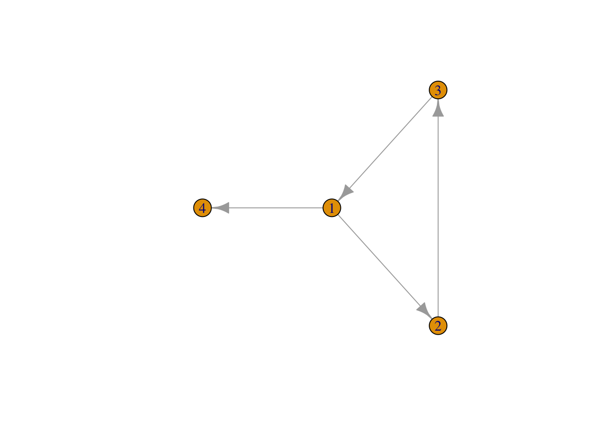
#and the isolated node lost, so:
g_from_elist <- graph_from_data_frame(g_elist, vertices = g_nodes_age)
plot(g_from_elist)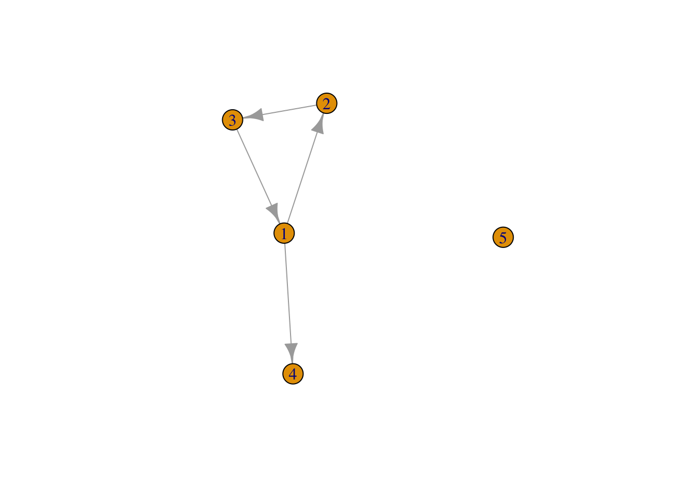
4.3 1.1.3 From adjacency list to igraph object
#From adjacency list to igraph object
g_adj_list <- read.csv(file = "https://github.com/rensec/sasr08/raw/main/g_adj_list.csv")
g_adj_list## id age friend1 friend2
## 1 1 20 2 4
## 2 2 21 3 NA
## 3 3 25 1 NA
## 4 4 NA NA NA
## 5 5 21 NA NA#transfer the data to something igraph can understand
g_elist_from_alist <- g_adj_list
g_elist_from_alist <- select(g_elist_from_alist, id, friend1:friend2) # keep only the network variables (and id)
g_elist_from_alist <- melt(g_elist_from_alist, id.vars = "id") # from the reshape2 package
g_elist_from_alist## id variable value
## 1 1 friend1 2
## 2 2 friend1 3
## 3 3 friend1 1
## 4 4 friend1 NA
## 5 5 friend1 NA
## 6 1 friend2 4
## 7 2 friend2 NA
## 8 3 friend2 NA
## 9 4 friend2 NA
## 10 5 friend2 NA#make code shorter using tidyverse
g_elist_from_alist <- g_adj_list %>%
select(id, friend1:friend2) %>% # keep only the network variables (and id)
melt( id.vars = "id") # from the reshape2 package
#To create an edge list we subsequently drop all missing values on “value”
g_elist_from_alist <- g_elist_from_alist%>%
filter(!is.na(value)) %>% # drop the missings
rename(from ="id", to = "value", sourcevar= "variable") %>% #just nice for interpretation
relocate(to, .after=from) #move around the columns
g_elist_from_alist## from to sourcevar
## 1 1 2 friend1
## 2 2 3 friend1
## 3 3 1 friend1
## 4 1 4 friend2g_from_alist <- graph_from_data_frame(g_elist_from_alist) #This is a proper igraph graph object
plot(g_from_alist)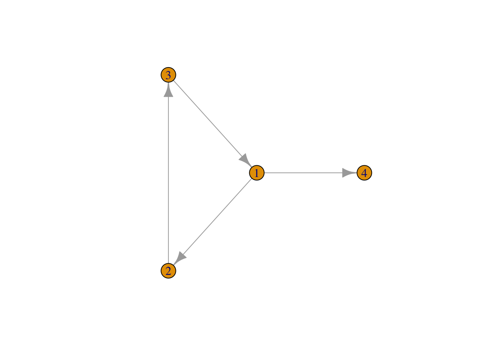
nodelist <- select(g_adj_list,id,age)
g_from_alist <- graph_from_data_frame(g_elist_from_alist, vertices = nodelist) #This is a proper igraph graph object
plot(g_from_alist)5 1.2 The reverse direction: exporting from igraph objects
5.1 1.2.1 From igraph to adjacency matrix
g_adj_matrix <- as_adjacency_matrix(g, sparse = FALSE)
g_adj_matrix## 1 2 3 4 5
## 1 0 1 0 1 0
## 2 0 0 1 0 0
## 3 1 0 0 0 0
## 4 0 0 0 0 0
## 5 0 0 0 0 0#check whether the resulting matrix is indeed identical
all(g_adj_matrix == g_matrix)## [1] TRUE5.2 1.2.2 From igraph to edge list
g_edgelist <- igraph::as_data_frame(g_from_elist, what = "edges")
g_edgelist ## from to
## 1 1 2
## 2 2 3
## 3 3 1
## 4 1 4#add missing nodes
igraph::as_data_frame(g_from_elist, what = "vertices") ## name age
## 1 1 20
## 2 2 21
## 3 3 25
## 4 4 NA
## 5 5 215.3 1.2.3 From igraph to adjacency list
edgelist_2 <- igraph::as_data_frame(g_from_alist, what = "edges")
nodelist_2 <- igraph::as_data_frame(g_from_alist, what = "vertices")
# Note the use of the "namespace" "igraph::" here, to indicate that we need the igraph function here, not the function with the same name from the dplyr/tidyverse package
d <- edgelist_2 %>%
rename(id = "from") %>%
pivot_wider( id_cols = id, names_from = sourcevar, values_from = to ) %>%
merge(nodelist_2, by.x = "id", by.y = "name", all.y = TRUE ) %>%
relocate(age, .after = id) %>%
type_convert() #as_data_frame returns characters; this transforms it back to numeric##
## ── Column specification ────────────────────────────────────────────────────────────
## cols(
## id = col_double(),
## friend1 = col_double(),
## friend2 = col_double()
## )d## id age friend1 friend2
## 1 1 20 2 4
## 2 2 21 3 NA
## 3 3 25 1 NA
## 4 4 NA NA NA
## 5 5 21 NA NA6 1.3 Getting network data into R: the network package
#import data into a network object (using the edge list that we’ve created before)
g_np <- as.network(g_elist_from_alist, matrix.type = "edgelist", vertices = nodelist)
g_np## Network attributes:
## vertices = 5
## directed = TRUE
## hyper = FALSE
## loops = FALSE
## multiple = FALSE
## bipartite = FALSE
## total edges= 4
## missing edges= 0
## non-missing edges= 4
##
## Vertex attribute names:
## age vertex.names
##
## Edge attribute names:
## sourcevarplot(g_np)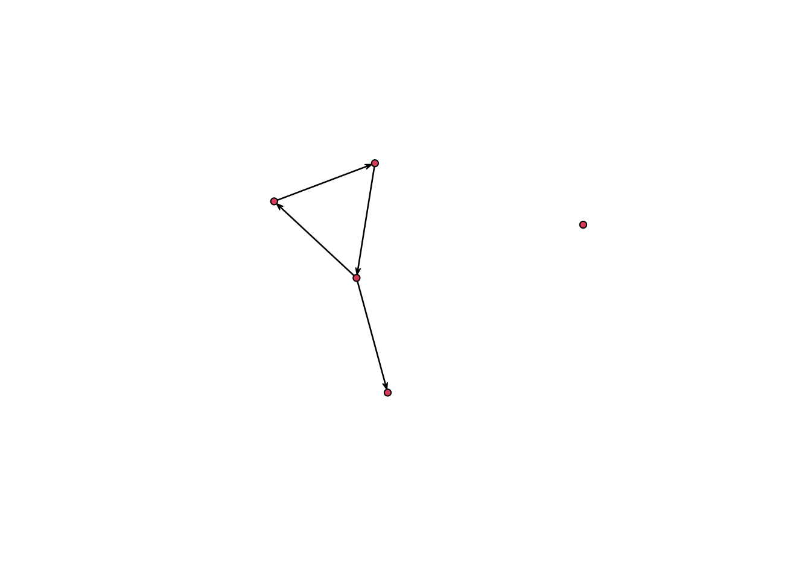
7 1.4 Modifying networks in igraph
Remove a node
g_mod <- delete_vertices(g,2)
plot(g_mod)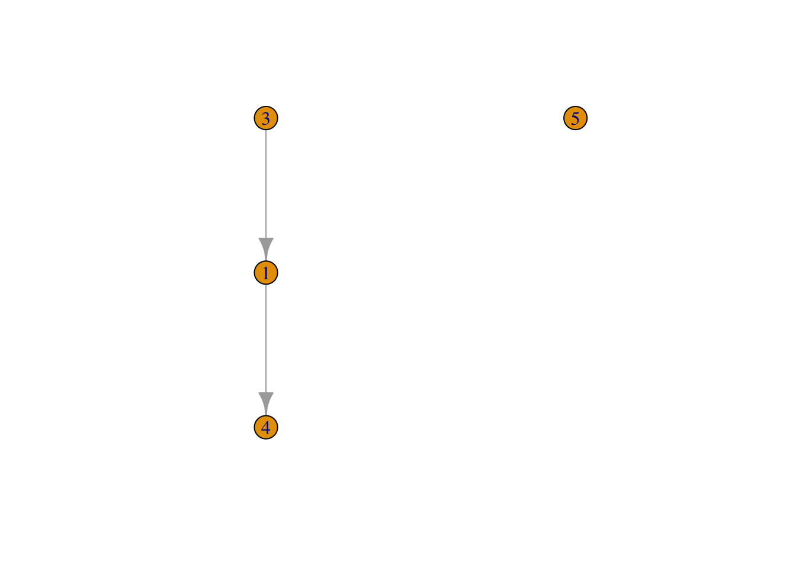
Remove all nodes with age = 21
g_mod <- delete_vertices(g,which(V(g)$age == 21))
plot(g_mod)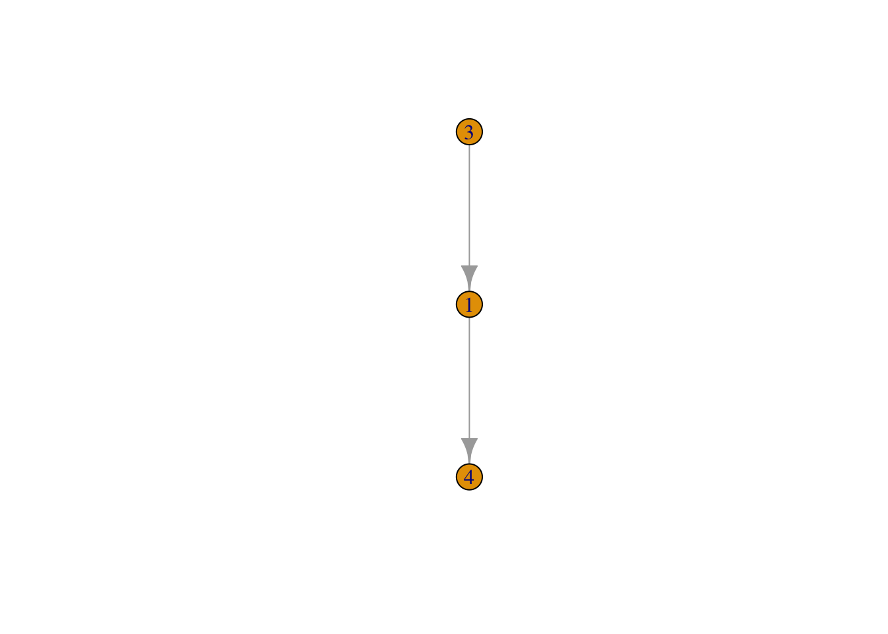
QUESTION:: Write the code to remove all nodes from
g for which age is missing.
g_mod <- delete_vertices(g, which(is.na(V(g)$age)))
plot(g_mod)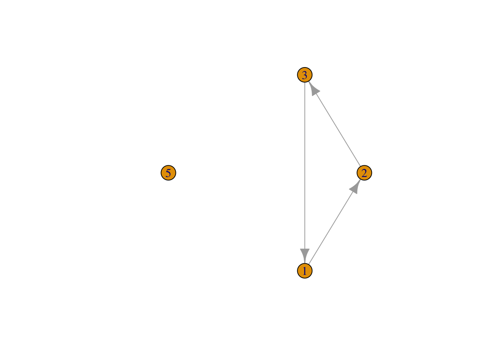
An alternative to set_vertex_attr() to set attributes
using V( )
V(g)$gender <- c("male", "female", "female", "other", "male")
g## IGRAPH 35d9911 DN-- 5 4 --
## + attr: name (v/c), age (v/n), gender (v/c)
## + edges from 35d9911 (vertex names):
## [1] 1->2 1->4 2->3 3->1Similarly, we can use E() to access, add and modify edge
attributes.
Use reverse() to reverse the direction of all edges
g_rev <- reverse_edges(g)
plot(g_rev)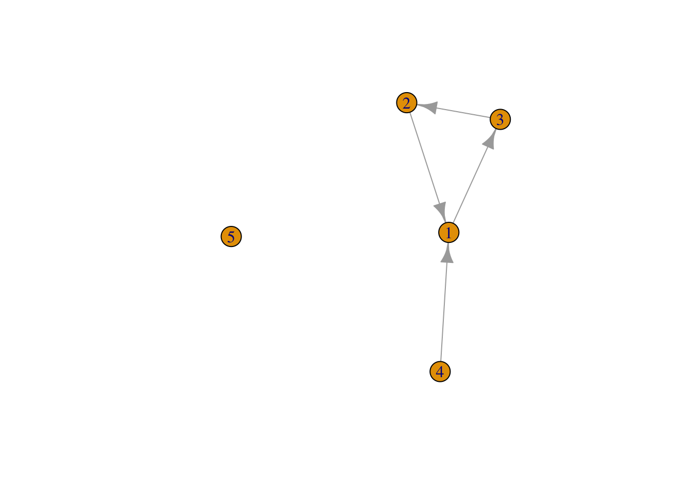
use union() to combine the edges of two graphs
g_union <- igraph::union(g, g_rev)
plot(g_union)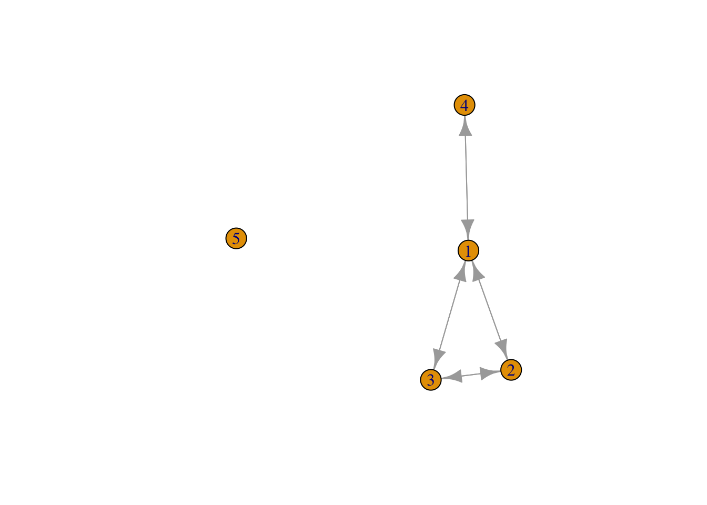
QUESTION: Before you run
plot(g_union), think about what the resulting network
should look like. Thus, what could you use the combination of
reverse() and union() for?
Transfer directional network into indirectional one
A similar result can be done as:
g_undir <- as_undirected(g)
plot(g_undir)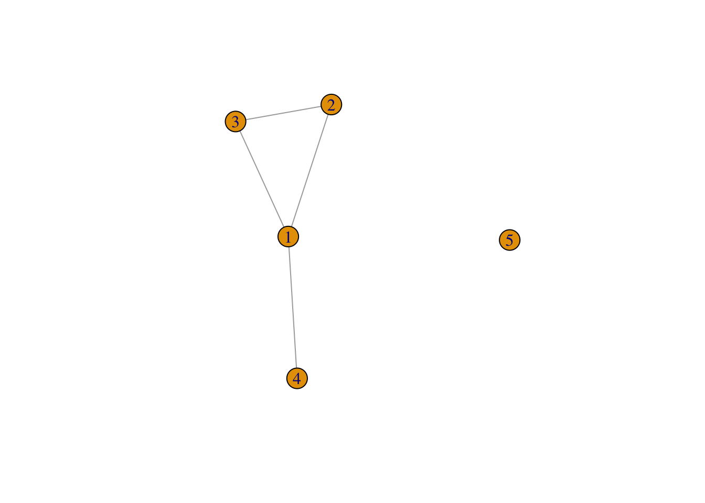